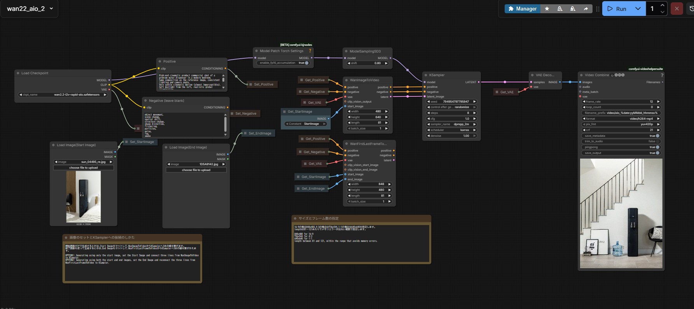

この事例のポイント
アクアクララの動画素材として、UGC（ユーザー生成コンテンツ）風 の短尺動画を制作しました。
前回のドゥベスト案件ではクラウドベースのAI動画生成サービス（Adobe Firefly / Google AI Studio）を使いましたが、クレジット消費の問題がありました。今回は 自宅PCを新調 したことをきっかけに、ローカル環境でのAI動画生成 に初挑戦した事例です。
制作した動画
ウォーターボトル
グラス
いずれも、UGC風を意識した自然な雰囲気の映像に仕上げています。
使用ツールの紹介
ComfyUI とは？
ComfyUI は、AI画像・動画生成のための ノードベースのワークフローツール です。プログラミングの知識がなくても、画面上で「ノード」と呼ばれるブロックをつなげていくことで、生成の処理手順を視覚的に組み立てられます。
ローカルPC上で動作するため、クラウドサービスのようなクレジット消費がなく、自分のマシンパワーの範囲内で何度でも生成を試せるのが最大のメリットです。
Wan2.2 とは？
Wan2.2（正式名：Wan Video）は、静止画から動画を生成できるAIモデル です。開始フレームの画像を入力すると、そこから自然な動きのある動画を生成してくれます。
ComfyUI上でこのWan2.2モデルを動かすことで、ローカル環境だけで動画生成が完結します。

今回使用したノード（ワークフロー）は配布されていたものをそのまま利用しています。
制作ワークフロー
- nanobananaPro で開始フレームの静止画を作成 — UGC風を意識した写真テイストの画像を生成
- ComfyUI + Wan2.2 で動画生成 — 静止画を入力し、2秒程度の動画を生成
- 素材として書き出し — 生成された動画をそのまま素材として使用
ローカルAI動画生成のメリット・デメリット
メリット
- クレジット消費ゼロ — クラウドサービスと違い、何度でも無料で試作できる
- データが外部に出ない — クライアント素材をクラウドに上げる必要がない
- 2秒程度なら破綻が少ない動画が作れる — UGC風動画で短いカットを数多く必要とするケースにちょうどいい
デメリット
- マシンパワーに依存 — グラフィックボード（GPU）の性能がそのまま生成速度・品質に直結する
- 動画画質があまり上げられない — 現状のスペックでは解像度やフレームレートに限界がある
- 大量生産は厳しい — 1本あたりの生成時間がかかるため、量をこなすには高性能GPUへの投資が必要
成果
- ローカル環境でのAI動画生成ワークフローを確立
- クレジットを気にせず試作を繰り返せる環境を整備
- UGC風の短尺カット素材として実案件に活用
再利用可能ポイント
- ComfyUI + Wan2.2 のワークフローは他案件にもそのまま転用可能
- nanobananaPro で静止画を作り、ComfyUI で動画化するという流れは汎用的
- 短尺カットが大量に必要なSNS広告やLP素材の制作に向いている
課題・改善点
- 現状のGPUスペックでは画質・速度に限界があり、大量生産には至らない
- ローカルAIはグラフィックボードにお金をかけないと本格運用が難しい
- 長尺（5秒以上）になると動きの破綻が増えるため、用途が短尺カットに限られる